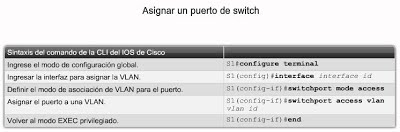
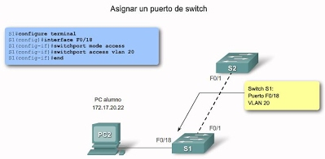
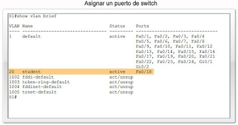

VLAN de Datos
Una VLAN de datos es una VLAN configurada para enviar sólo tráfico de datos generado por el usuario. Una VLAN podría enviar tráfico basado en voz o tráfico utilizado para administrar el switch, pero este tráfico no sería parte de una VLAN de datos. Es una práctica común separar el tráfico de voz y de administración del tráfico de datos. La importancia de separar los datos del usuario del tráfico de voz y del control de administración del switch se destaca mediante el uso de un término específico para identificar las VLAN que sólo pueden enviar datos del usuario: una "VLAN de datos". A veces, a una VLAN de datos se la denomina VLAN de usuario.

VLAN Predeterminada
Todos los puertos de switch se convierten en un miembro de la VLAN predeterminada luego del arranque inicial del switch. Hacer participar a todos los puertos de switch en la VLAN predeterminada los hace a todos parte del mismo dominio de broadcast. Esto admite cualquier dispositivo conectado a cualquier puerto de switch para comunicarse con otros dispositivos en otros puertos de switch. La VLAN predeterminada para los switches de Cisco es la VLAN 1. La VLAN 1 tiene todas las características de cualquier VLAN, excepto que no la puede volver a denominar y no la puede eliminar. El tráfico de control de Capa 2, como CDP y el tráfico del protocolo spanning tree se asociará siempre con la VLAN 1: esto no se puede cambiar. En la figura, el tráfico de la VLAN1 se envía sobre los enlaces troncales de la VLAN conectando los switches S1, S2 y S3. Es una optimización de seguridad para cambiar la VLAN predeterminada a una VLAN que no sea la VLAN 1; esto implica configurar todos los puertos en el switch para que se asocien con una VLAN predeterminada que no sea la VLAN 1. Los enlaces troncales de la VLAN admiten la transmisión de tráfico desde más de una VLAN.

VLAN Nativa
Una VLAN nativa está asignada a un puerto troncal 802.1Q. Un puerto de enlace troncal 802.1 Q admite el tráfico que llega de muchas VLAN (tráfico etiquetado) como también el tráfico que no llega de una VLAN (tráfico no etiquetado). El puerto de enlace troncal 802.1Q coloca el tráfico no etiquetado en la VLAN nativa. En la figura, la VLAN nativa es la VLAN 99. El tráfico no etiquetado lo genera una computadora conectada a un puerto de switch que se configura con la VLAN nativa. Las VLAN se establecen en la especificación IEEE 802.1Q para mantener la compatibilidad retrospectiva con el tráfico no etiquetado común para los ejemplos de LAN antigua. Para nuestro fin, una VLAN nativa sirve como un identificador común en extremos opuestos de un enlace troncal. Es una optimización usar una VLAN diferente de la VLAN 1 como la VLAN nativa.

VLAN de Administración
Una VLAN de administración es cualquier VLAN que usted configura para acceder a las capacidades de administración de un switch. La VLAN 1serviría como VLAN de administración si no definió proactivamente una VLAN única para que sirva como VLAN de administración. Se asigna una dirección IP y una máscara de subred a la VLAN de administración. Se puede manejar un switch mediante HTTP, Telnet, SSH o SNMP. Debido a que la configuración lista para usar de un switch de Cisco tiene a VLAN 1 como la VLAN predeterminada, puede notar que la VLAN 1 sería una mala opción como VLAN de administración; no querría que un usuario arbitrario se conectara a un switch para que se configurara de manera predeterminada la VLAN de administración. Recuerde que configuró la VLAN de administración como VLAN 99 en el capítulo Configuración y conceptos básicos de switch.

VLAN de voz
Es fácil apreciar por qué se necesita una VLAN separada para admitir la Voz sobre IP (VoIP). Imagine que está recibiendo una llamada de urgencia y de repente la calidad de la transmisión se distorsiona tanto que no puede comprender lo que está diciendo la persona que llama. El tráfico de VoIP requiere: Ancho de banda garantizado para asegurar la calidad de la voz Prioridad de la transmisión sobre los tipos de tráfico de la red Capacidad para ser enrutado en áreas congestionadas de la red Demora de menos de 150 milisegundos (ms) a través de la red Para cumplir estos requerimientos, se debe diseñar la red completa para que admita VoIP. Los detalles sobre cómo configurar una red para que admita VoIP están más allá del alcance del curso, pero es útil resumir cómo una VLAN de voz funciona entre un switch, un teléfono IP de Cisco y una computadora.

Configuración de VLAN
Agregue una VLAN
En este tema, aprenderá a crear una VLAN estática en un switch Cisco Catalyst mediante el modo de configuración global de la VLAN. Existen dos modos diferentes para configurar las VLAN en un switch Cisco Catalyst: modo de configuración de base de datos y modo de configuración global. A pesar de que la documentación de Cisco menciona el modo de configuración de base de datos de la VLAN, se elimina a favor del modo de configuración global de la VLAN. El usuario configurará las VLAN con los ID en el rango normal. Recuerde que existen dos rangos de ID de la VLAN. El rango normal incluye los ID 1 a 1001 y el rango ampliado consiste de los ID 1006 a 4094. VLAN 1 y 1002 a 1005 son números de ID reservados. Cuando configura las VLAN de rango normal, los detalles de configuración se almacenan automáticamente en la memoria flash del switch en un archivo llamado vlan.dat. Debido a que el usuario configura frecuentemente otros aspectos de un switch Cisco al mismo tiempo, es una buena práctica guardar los cambios de la configuración activa en la configuración de inicio.
Figura ejemplo

Asignación de un puerto de switch
Después de crear una VLAN, asígnele un puerto o más. Cuando asigna un puerto de switch a una VLAN en forma manual, se lo conoce como puerto de acceso estático. Un puerto de acceso estático puede pertenecer a sólo una VLAN por vez. Haga clic en el botón Sintaxis del comando en la figura para revisar los comandos IOS de Cisco para asignar un puerto de acceso estático a la VLAN.

Haga clic en el botón Ejemplo en la figura para ver cómo la VLAN del estudiante, VLAN 20, se asigna estáticamente al puerto F0/18 en el switch S1. El puerto F0/18 se ha asignado a la VLAN 20, de manera que la computadora del estudiante, PC2, está en la VLAN 20. Cuando la VLAN 20 se configura en otros switches, el administrador de red sabe configurar las otras computadoras de estudiantes para encontrarse en la misma subred que PC2: 172.17.20.0 /24.

Haga clic en el botón Verificación en la figura para confirmar que el comando show vlan brief muestra los contenidos del archivo vlan.dat. En la captura de pantalla se resalta la VLAN del estudiante, VLAN 20.

Seguridad de VLAN
Si configura una red de área local virtual (VLAN), recuerde que las VLAN comparten el ancho de banda de la red y requieren medidas de seguridad adicionales. Al usar VLAN, separe los clusters sensibles de sistemas del resto de la red. De esta manera, se reduce la probabilidad de que los usuarios tengan acceso a la información almacenada en esos clientes y servidores. Asigne un número de VLAN nativo único a los puertos de enlace troncal. Limite las VLAN que se pueden transportar mediante un enlace troncal a las que son estrictamente necesarias. Desactive el protocolo de enlace troncal (VTP) de VLAN, si es posible. De lo contrario, configure lo siguiente para el VTP: dominio de gestión, contraseña y eliminación. A continuación, defina VTP en modo transparente. Utilice configuraciones de VLAN estáticas, cuando sea posible. Desactive los puertos de conmutador no utilizados y asígneles un número de VLAN que no esté en uso.
ir a practicas y caso practico